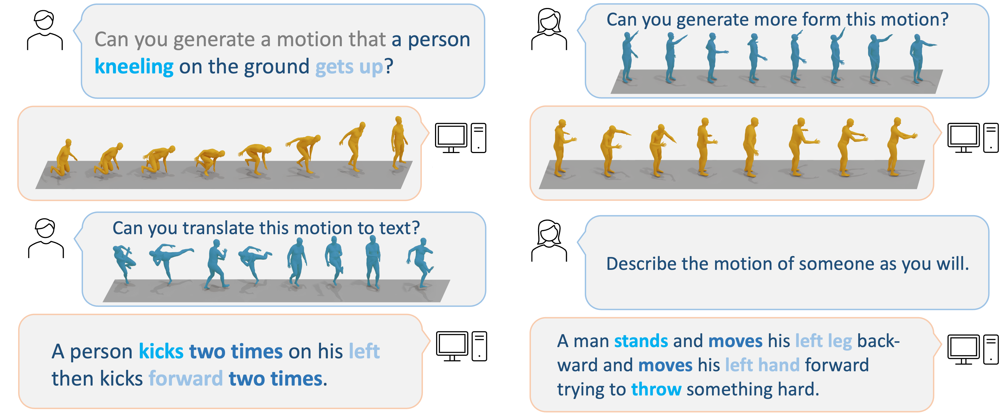
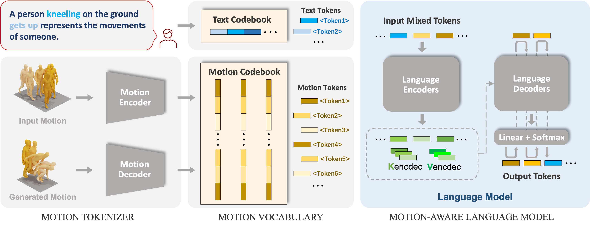

MotionGPT: Human Motion
as Foreign
Language
Paper
Abstract
Though the advancement of pre-trained large language models unfolds, the exploration of building a unified model for language and other multimodal data, such as motion, remains challenging and untouched so far. Fortunately, human motion displays a semantic coupling akin to human language, often perceived as a form of body language. By fusing language data with large-scale motion models, motion-language pre-training that can enhance the performance of motion-related tasks becomes feasible. Driven by this insight, we propose MotionGPT, a unified, versatile, and user-friendly motion-language model to handle multiple motion-relevant tasks. Specifically, we employ the discrete vector quantization for human motionand transfer 3D motion into motion tokens, similar to the generation process ofword tokens. Building upon this “motion vocabulary”, we perform language modeling on both motion and text in a unified manner, treating human motion as a specific language. Moreover, inspired by prompt learning, we pre-train MotionGPT with a mixture of motion-language data and fine-tune it on prompt-based question-and-answer tasks. Extensive experiments demonstrate that MotionGPT achieves state-of-the-art performances on multiple motion tasks including text-driven motion generation, motion captioning, motion prediction, and motion in-between.

Our
Method
To involve large language data and models in the motion generation tasks, we propose a unified motion-language framework named MotionGPT. MotionGPT consists of a motion tokenizer responsible for converting raw motion data into discrete motion tokens, as well as a motion-aware language model that learns to understand the motion tokens from large language pre-training models by corresponding textual descriptions.
